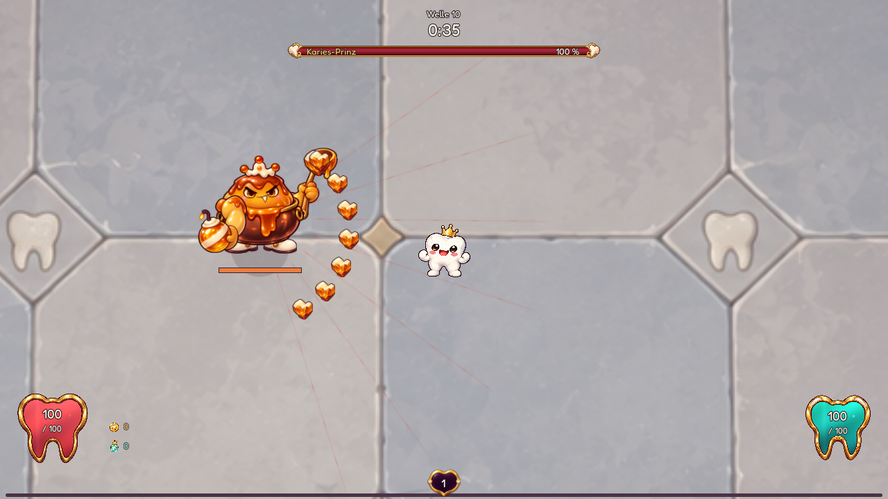
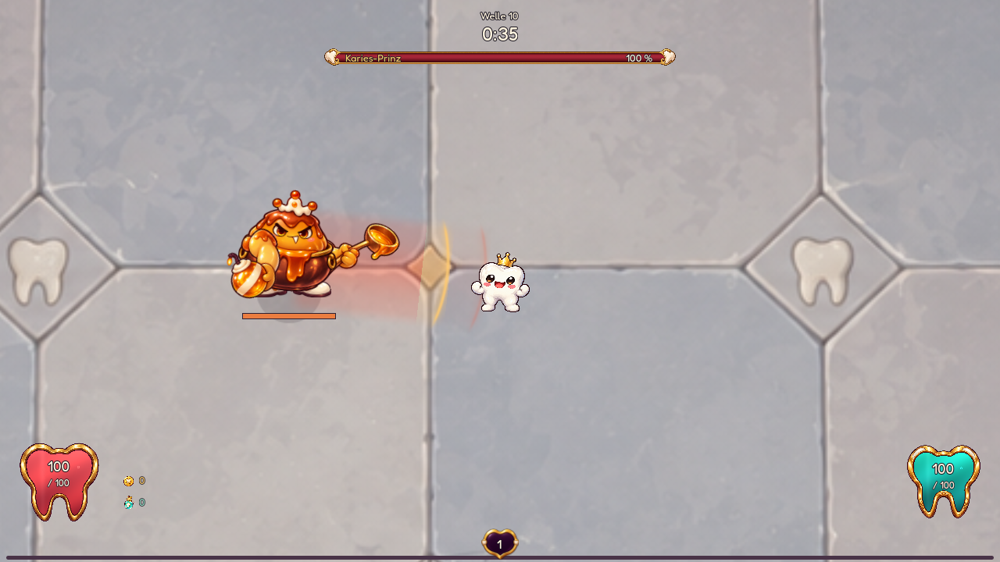
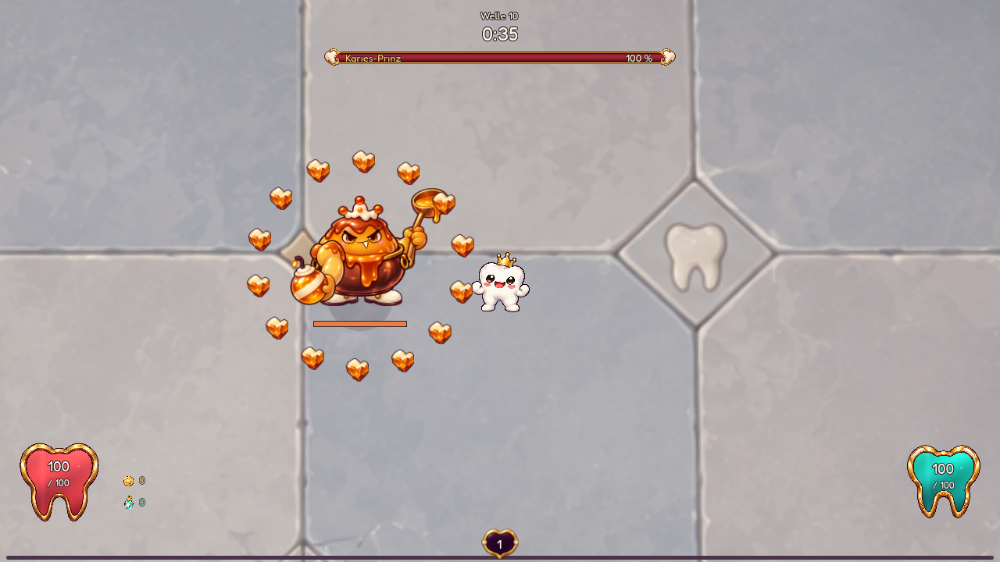
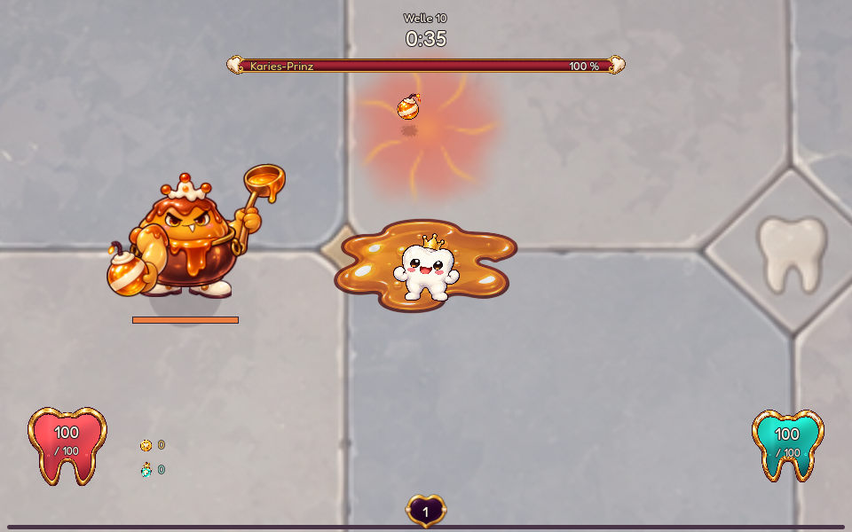

DENTI · ZWEITER BOSS · SPIELBARER PROTOTYP
Die Karamellküche.
Der Karies-Prinz kocht auf. Zuckerbomben legen klebrigen Boden. Karamellherzen fliegen im Fächer. Nach einem angekündigten Ansturm feuert er einen vollständigen Herzkranz rundherum. Drei Abläufe, drei verschiedene Antworten.
Normal · zweite Gesundheitsphase · drei Bomben, zwei Herzsalven, ein vollständiger Herzkranz.
1 · ZuckerbombenMarkierte Einschläge bewusst ablegen. Easy / Normal / Hard / Hell: in der zweiten Phase zwei / drei / vier / fünf Bomben. Ab Normal bewegt er sich zwischen den Würfen. Karamell bremst fünf Sekunden lang; höchstens vier Felder.
2 · HerzfächerDie Kelle hebt ein Karamellherz. Die tatsächlichen Flugrichtungen werden angekündigt. In der zweiten Phase eine / zwei / drei / vier Salven mit fünf / sieben / neun / elf Herzen. Gleichmäßige Abstände, keine ausgelassenen Geschosse.
3 · ZuckerrauschDie Lichtbahn kündigt einen festen Ansturm an. Danach bereitet der Prinz einen Herzkranz vor. Vollständige Ringe ohne Sicherheitsgasse. Auf Hell folgen zwei versetzte Kränze. Distanz, Geschossabstände und der Wechsel zwischen den Ringen zählen.



Generierte Einzelteile mit Gelenkanimation; keine verzerrten Ganzkörperbilder. Bombermarkierung, Flug und Treffer folgen einer gemeinsamen Uhr. Keine zusätzlichen Boss-HP und keine alten generischen Phasensalven.
Normal: Desktop und Mobile

Je 18 Sekunden native Godot-Aufnahme auf Easy, Normal, Hard und Hell, jeweils in der zweiten Gesundheitsphase, mit skriptgesteuertem Denti, ohne Waffen und normale Gegner zur besseren Beurteilung. Der Encounter ist im regulären Welle-10-Profil sowie Story und Endlos angeschlossen. Speichern/Fortsetzen auch mit vier Salven, langsame Eckrouten auf Hell, feste Ziele, Dash-Treffer und begrenzte Felder sind getestet. Menschliche Spieltests der vollen Welle und mobile Web-Performance stehen noch aus.
Das bereits generierte Karamellherz ist jetzt ein echtes Projektil. Alle drei Hauptangriffe kommen bereits in der ersten Gesundheitsphase vor. Schwierigkeit und Gesundheitsphasen erweitern Fächer und Salven. Hell hat 28 % schnellere Herzen, kürzere Erholung und deutlich mehr Bewegung. Die Warnzeiten bleiben erhalten.
Wie König und Imperator darauf aufbauen
König · jetzt umgesetzt: Säurerinnen, angekündigte Pegelwechsel, versetzte Splitterstampfer und das Zurückziehen des Vorrats. Freie Übergänge planen und die Öffnung nach dem Entleeren nutzen. Zum Säuresammler.
Imperator · jetzt umgesetzt: gerichtete Kronenwache, wechselnde Hofurteile, echte Portal-Wurzellanzen und vollständige Nervensalven mit offenem Kern. Zum Kronengericht.
Zum Säuresammler · Zum Umhang-Grafen · Charge-Warnungen